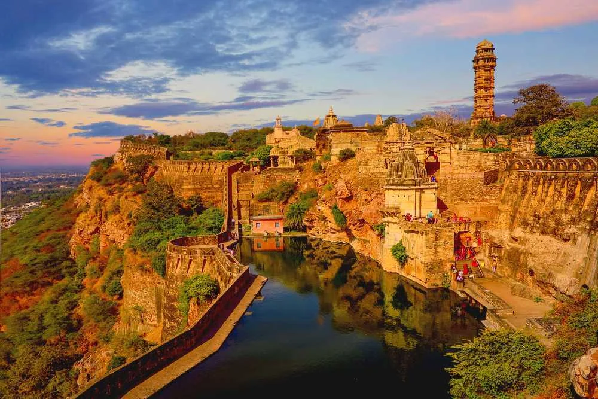
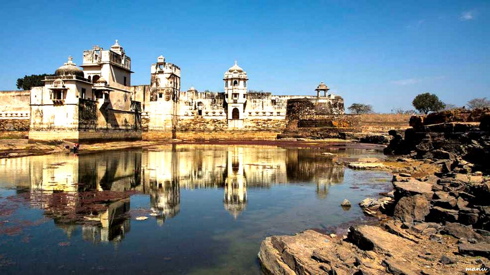
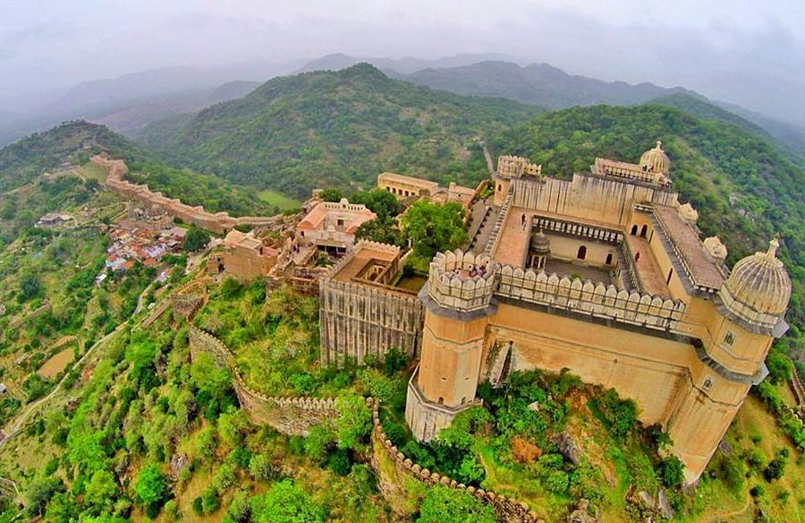
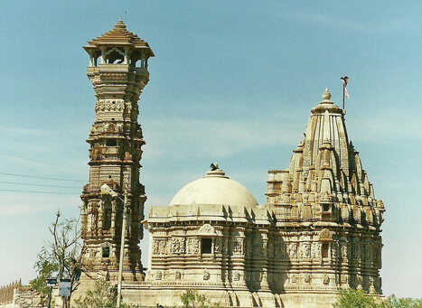

Chittorgarh Fort: The Pride of Rajasthan
Chittorgarh Fort is one of the largest forts in India and a UNESCO World Heritage Site, known for its historical significance and architectural grandeur.
Fun Fact:
~It’s the birthplace of the legendary queen Rani Padmini!
Things to Explore at Chittorgarh Fort:
-
The Vijay Stambha:
Climb the iconic victory tower for panoramic views of the fort and surrounding landscape.
-
The Kirti Stambha:
Visit the tower dedicated to Jain Tirthankaras, showcasing intricate carvings.
-
The Rana Kumbha Palace:
Explore the ruins of the royal palace with stunning architecture and history.
-
The Gaumukh Reservoir:
Admire the ancient water reservoir carved out of rock, a marvel of engineering.
-
The Jain Temples:
Discover beautifully carved Jain temples within the fort complex.
Why Visit Chittorgarh Fort?
!Because it’s a symbol of Rajput valor, rich history, and architectural brilliance!

Rani Padmini Palace: The Legend of Beauty
Rani Padmini Palace is a historical palace known for its association with the legendary queen Rani Padmini and her beauty.
Fun Fact:
~It’s said that Rani Padmini performed Jauhar (self-immolation) to protect her honor!
Things to Explore at Rani Padmini Palace:
-
The Mirror Room:
Visit the famous mirror room where Rani Padmini is said to have admired her reflection.
-
The Courtyards:
Stroll through the beautiful courtyards surrounded by stunning architecture.
-
The Gardens:
Explore the lush gardens surrounding the palace, offering a serene ambiance.
-
The Local Artisans:
Meet local artisans showcasing their crafts and skills.
-
The Cultural Performances:
Enjoy cultural performances held in the palace premises.
Why Visit Rani Padmini Palace?
!Because it’s a symbol of beauty, valor, and sacrifice in Rajputana history!

Kumbhalgarh Fort: The Great Wall of India
Kumbhalgarh Fort is a UNESCO World Heritage Site known for its massive walls and stunning architecture, often referred to as the Great Wall of India.
Fun Fact:
~It has the second-longest continuous wall after the Great Wall of China!
Things to Explore at Kumbhalgarh Fort:
-
The Fort Walls:
Walk along the impressive fort walls offering breathtaking views of the Aravalli Range.
-
The Badal Mahal:
Visit the royal palace with its unique architecture and panoramic views.
-
The Jain Temples:
Explore beautifully carved Jain temples within the fort complex.
-
The Wildlife Sanctuary:
Discover the diverse flora and fauna in the surrounding Kumbhalgarh Wildlife Sanctuary.
-
The Cultural Heritage:
Learn about the rich cultural heritage and history of the Rajputana era.
Why Visit Kumbhalgarh Fort?
!Because it’s a marvel of Rajput architecture and a testament to their engineering prowess!

Vijay Stambha: The Tower of Victory
Vijay Stambha, or the Tower of Victory, is a towering structure built to commemorate Maharana Kumbha’s victory over the Malwa rulers.
Fun Fact:
~It stands at a height of 37 meters and is adorned with intricate carvings!
Things to Explore at Vijay Stambha:
-
The Climb:
Climb the 157 steps to reach the top for panoramic views of the fort and surrounding landscape.
-
The Carvings:
Admire the detailed carvings depicting various deities and scenes from Hindu mythology.
-
The Architecture:
Explore the unique architectural style blending Rajput and Mughal influences.
-
The Local Culture:
Experience the local culture and traditions celebrated around the tower.
-
The Photography Opportunities:
Capture stunning photographs of the tower and surrounding landscapes.
Why Visit Vijay Stambha?
!Because it’s a symbol of victory, architectural brilliance, and a must-visit landmark in Chittorgarh!

Kirti Stambha: The Tower of Fame
Kirti Stambha, or the Tower of Fame, is a Jain victory tower dedicated to the Jain Tirthankaras, showcasing exquisite carvings and architecture.
Fun Fact:
~It’s one of the finest examples of Jain architecture in Rajasthan!
Things to Explore at Kirti Stambha:
-
The Carvings:
Admire the intricate carvings depicting Jain Tirthankaras and celestial beings.
-
The Architecture:
Explore the unique architectural style blending Jain and Rajput influences.
-
The Local Culture:
Experience the local culture and traditions celebrated around the tower.
-
The Photography Opportunities:
Capture stunning photographs of the tower and surrounding landscapes.
-
The Spiritual Significance:
Learn about the spiritual significance of the tower in Jainism.
Why Visit Kirti Stambha?
!Because it’s a masterpiece of Jain architecture and a symbol of spiritual heritage in Chittorgarh!